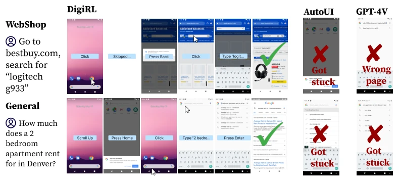
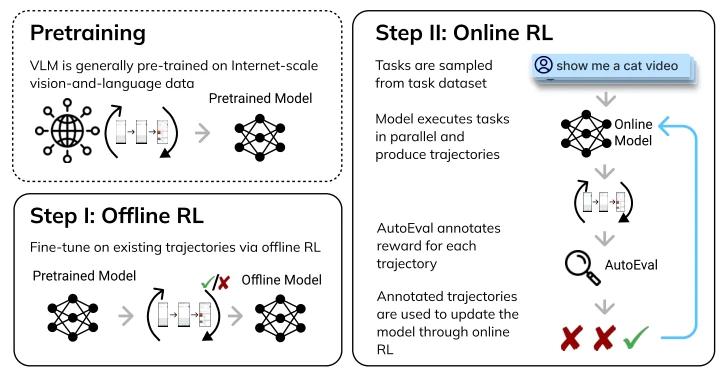
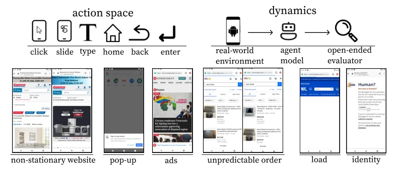
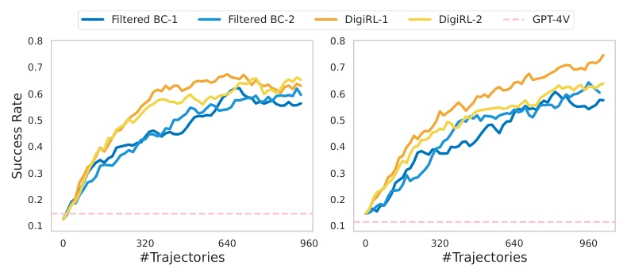
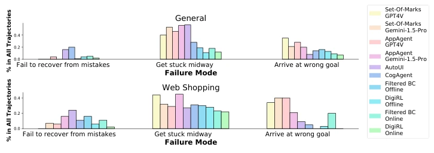
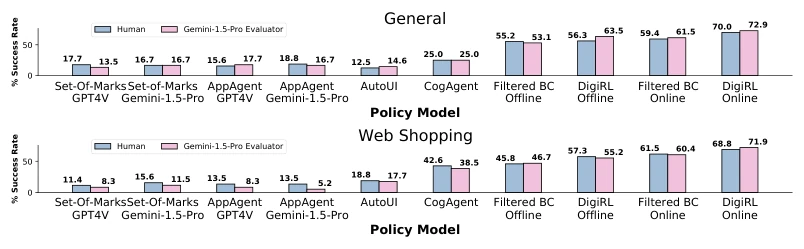
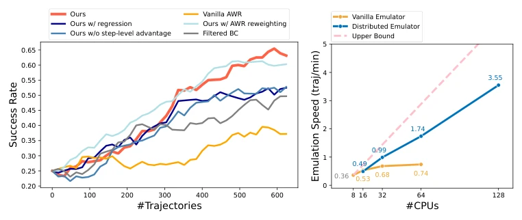
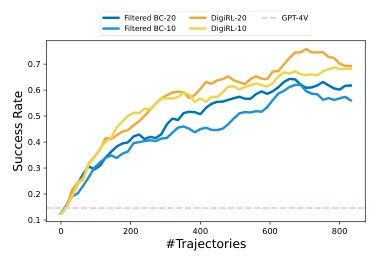
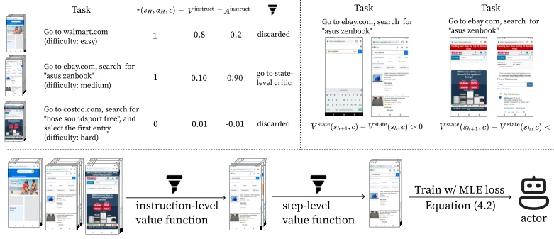
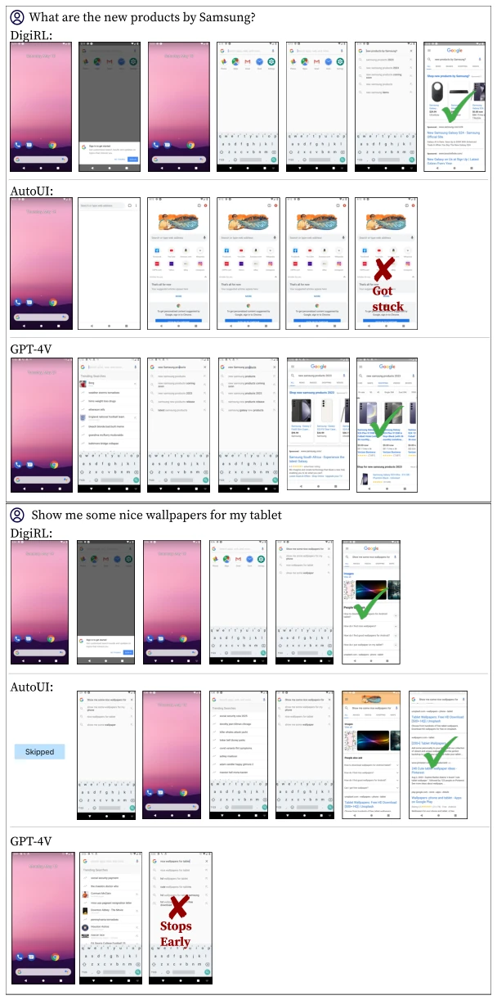

This paper serves as a dose of cold water for "hyperparameter tuning experts". Previously, everyone utilized GPT-4V with Prompts or Imitation Learning (IL) for device control, only to find that static data cannot withstand the randomness of the real world (ad pop-ups, page updates). DigiRL directly employs Reinforcement Learning (RL), using a 1.3B small model to outperform the 17B CogAgent and GPT-4V Wrapper, which is indeed noteworthy. However, do not get too excited too soon; it still relies on simulators (Emulator). Although 64 are parallelized, the latency and hardware differences of real phones remain unsolved. Moreover, although that automatic Evaluator aligns with humans, what if the evaluator itself hallucinates? Overall, this is a powerful attempt to pull RL back from toy environments to real GUI control, but the claim of "In-The-Wild" is somewhat overstated, as it still runs within simulators. Although efficiency is improved, the training cost is not low, given the need to run so many simulators.
The core challenge lies in VLMs lacking decision data, resulting in poor performance in GUI control. Existing mainstream solutions are either Prompt-based Wrappers (e.g., AppAgent [47]) or Imitation Learning based on static human demonstrations (e.g., AutoUI [53]). The former is limited by base model capabilities and cannot be improved via fine-tuning, failing when low-level control reasoning breaks down [49, 3]; the latter can be fine-tuned, but static data cannot cover the randomness and non-stationarity of real environments (e.g., web page updates, ads), causing models to struggle to recover once encountering out-of-distribution states [8, 12]. The paper indicates that true device control requires Agents to learn from their own interaction experience, particularly from failures. While existing methods like Filtered BC [26] have attempted self-collected data, they suffer from low sample efficiency and difficulty coping with changes in complex task difficulty. Therefore, an RL method capable of adaptive online interaction is needed.

Figure 2: Qualitative comparison between DigiRL and other approaches. AutoUI trained from static human demonstrations can easily get stuck in out-of-distribution states while GPT-4V often get on a wrong goal (searched “logitech g933bestbuy.com logitech g933” in Google instead of bestbuy.com). In contrast, DigiRL can recover from such states and complete complex instruction as requested.
方法Method
DigiRL 采用两阶段训练：先用离线 RL 初始化，再用离线到在线 RL 微调。整体流程基于 Advantage-Weighted Regression (AWR)。核心创新在于处理随机性的价值估计和课程学习。首先，针对设备生态的高方差，设计了 Doubly-Robust Advantage Estimator，结合 Monte-Carlo 估计和 Step-level Value Function，平衡方差与偏差，用于筛选优势动作。其次，引入 Instruction-level Value Function 构建自动课程，根据任务难度（V_instruct）优先选择高学习信号的数据，避免在简单任务上浪费样本。训练时使用 Cross-Entropy Loss 训练价值函数，Actor 使用 MLE Loss 在过滤后的数据上更新。环境方面，构建了支持 64 个并行 Android 模拟器的系统，配合 Gemini 1.5 Pro 作为自动评估器提供 Reward。这种设计避免了传统 RL 需要维护多个网络（如 Q 网络、价值网络）的复杂性，更适合工程落地，同时通过自动课程解决了任务难度不均导致的样本浪费问题。
DigiRL adopts a two-stage training process: first offline RL initialization, followed by offline-to-online RL fine-tuning. The overall workflow is based on Advantage-Weighted Regression (AWR). Core innovations lie in value estimation for handling randomness and curriculum learning. First, targeting the high variance of device ecosystems, a Doubly-Robust Advantage Estimator is designed, combining Monte-Carlo estimation and Step-level Value Function to balance variance and bias, used for filtering advantageous actions. Second, an Instruction-level Value Function is introduced to construct an automatic curriculum, prioritizing the selection of data with high learning signals based on task difficulty (V_instruct) to avoid wasting samples on simple tasks. During training, Cross-Entropy Loss is used to train the value function, while the Actor uses MLE Loss to update on filtered data. Regarding the environment, a system supporting 64 parallel Android simulators is constructed, paired with Gemini 1.5 Pro as an automatic evaluator to provide Reward. This design avoids the complexity of traditional RL requiring the maintenance of multiple networks (e.g., Q network, value network), making it more suitable for engineering implementation, while solving the sample waste problem caused by uneven task difficulty through automatic curriculum.

Figure 1: DigiRL overview. DigiRL is built upon a VLM that has been pre-trained on extensive web data to develop fundamental skills such as common knowledge, reasoning, and visual grounding. Initially, we employ offline RL to fine-tune the VLM using stale task-specific data, which helps in eliciting goal-oriented behaviors. Subsequently, our agent engages with real-world graphical user interfaces, continuously enhancing its performance through online RL and autonomous performance evaluations.

Figure 3: Environment details. Top: actions space and dynamics of the environment. Bottom: examples of the read-world non-stationarity and dynamism of the environment.

Figure 6: Offline-to-online training curves for Filtered BC and DigiRL. Curves are smoothed with expo- nential weighting over the x-axis. Left: AitW General. Right: AitW Web Shopping. Two runs for each model are started on two different dates with at least two days apart. Observe that DigiRL is able to improve faster with a fewer number of samples. Since the data collection frequency is the bottleneck, these performance trends directly reflect performance trends against wall-clock time as well.
实验Experiments
在 AitW 数据集的 General 和 Web Shopping 子集上测试。基线包括 GPT-4V、Gemini 1.5 Pro、AppAgent、CogAgent 及 Filtered BC。DigiRL 的 1.3B 模型在 Web Shopping 上达到 67.2% 成功率，远超 17B 的 CogAgent (38.5%) 和 GPT-4V Wrapper (8.3%)。相比 Filtered BC (57.8%) 也有显著提升。消融实验表明，Cross-Entropy 训练价值函数、Step-level 优势估计和自动课程均必要，缺一不可。此外，并行模拟器实现了近线性的加速。失败模式分析显示，RL 训练最显著减少了“无法从错误中恢复”的情况。
Tested on the General and Web Shopping subsets of the AitW dataset. Baselines include GPT-4V, Gemini 1.5 Pro, AppAgent, CogAgent, and Filtered BC. DigiRL's 1.3B model achieves a 67.2% success rate on Web Shopping, significantly outperforming the 17B CogAgent (38.5%) and GPT-4V Wrapper (8.3%). There is also a significant improvement compared to Filtered BC (57.8%). Ablation studies indicate that Cross-Entropy training of the value function, Step-level advantage estimation, and automatic curriculum are all indispensable. Additionally, parallel simulators achieved near-linear acceleration. Failure mode analysis shows that RL training most significantly reduced cases of "unable to recover from errors".

Figure 7: Failure modes for each approach on both the AiTW General and Web Shopping subsets. We found that the failure mode RL training is most effective at reducing compared to model supervised trained on human data is “Fail to recover from mistakes”. A more fine-grained decomposition can be found in Appendix D.

Figure 8: Correlation between our autonomous evaluator and human judgements for all policy models on General and Web Shopping subsets. For repeated offline and online runs, we report the correlation results for the run with the highest autonomous evaluation success rate.

Figure 9: Left: Ablation study results on the AitW Web Shopping subset. Right: Emulation speed w.r.t number of CPUs used. The upper bound can only achieved when there is no communication and error handling cost. Our design of distributed emulator can significantly improve the efficiency of emulation compaared to the vanilla method of running all emulations over the same instance.

Figure 10: Success rate with different horizon length (H ∈{10, 20})under different methods on the AiTW Google Search task set.
其他图片Other Figures

Figure 5: Algorithm visualization. The two value function are first trained with original distribution of collected trajectories according to Equation (4.5) and Equation (4.6), then used to filter the trajectories for training the actor. We use the MLE loss (Maximum Likelihood Estimation loss) to train the actor.

Figure 11: Agents’ trajectory on two randomly sampled tasks on the General split of AitW.